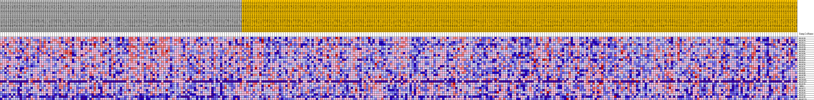
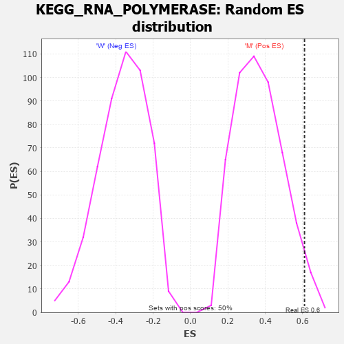

Profile of the Running ES Score & Positions of GeneSet Members on the Rank Ordered List
| Dataset | MUC16.MUC16.cls#M_versus_W.MUC16.cls#M_versus_W_repos |
| Phenotype | MUC16.cls#M_versus_W_repos |
| Upregulated in class | M |
| GeneSet | KEGG_RNA_POLYMERASE |
| Enrichment Score (ES) | 0.6097077 |
| Normalized Enrichment Score (NES) | 1.6631433 |
| Nominal p-value | 0.033864543 |
| FDR q-value | 0.109561265 |
| FWER p-Value | 0.523 |
| PROBE | DESCRIPTION (from dataset) | GENE SYMBOL | GENE_TITLE | RANK IN GENE LIST | RANK METRIC SCORE | RUNNING ES | CORE ENRICHMENT | |
|---|---|---|---|---|---|---|---|---|
| 1 | POLR1B | na | 153 | 0.219 | 0.0812 | Yes | ||
| 2 | POLR2B | na | 267 | 0.202 | 0.1566 | Yes | ||
| 3 | POLR2A | na | 392 | 0.188 | 0.2264 | Yes | ||
| 4 | POLR3G | na | 709 | 0.166 | 0.2846 | Yes | ||
| 5 | POLR2D | na | 1096 | 0.146 | 0.3338 | Yes | ||
| 6 | POLR3H | na | 1107 | 0.146 | 0.3896 | Yes | ||
| 7 | POLR3C | na | 1331 | 0.137 | 0.4381 | Yes | ||
| 8 | POLR3B | na | 2050 | 0.115 | 0.4693 | Yes | ||
| 9 | POLR1A | na | 2645 | 0.103 | 0.4979 | Yes | ||
| 10 | POLR3K | na | 3399 | 0.090 | 0.5190 | Yes | ||
| 11 | POLR1E | na | 3433 | 0.090 | 0.5529 | Yes | ||
| 12 | POLR3A | na | 3736 | 0.086 | 0.5802 | Yes | ||
| 13 | POLR2E | na | 4668 | 0.073 | 0.5914 | Yes | ||
| 14 | POLR2C | na | 5100 | 0.068 | 0.6097 | Yes | ||
| 15 | POLR3D | na | 7885 | 0.042 | 0.5754 | No | ||
| 16 | POLR1C | na | 8352 | 0.038 | 0.5817 | No | ||
| 17 | POLR3F | na | 12755 | 0.006 | 0.5043 | No | ||
| 18 | POLR2H | na | 15019 | -0.000 | 0.4634 | No | ||
| 19 | POLR2L | na | 16423 | -0.007 | 0.4408 | No | ||
| 20 | POLR3GL | na | 17057 | -0.011 | 0.4334 | No | ||
| 21 | POLR2J2 | na | 17220 | -0.012 | 0.4349 | No | ||
| 22 | POLR2G | na | 23404 | -0.040 | 0.3383 | No | ||
| 23 | ZNRD1 | na | 24520 | -0.044 | 0.3351 | No | ||
| 24 | POLR2I | na | 24908 | -0.046 | 0.3457 | No | ||
| 25 | POLR2K | na | 25197 | -0.047 | 0.3585 | No | ||
| 26 | POLR1D | na | 27405 | -0.055 | 0.3397 | No | ||
| 27 | POLR2J | na | 49336 | -0.135 | -0.0055 | No | ||
| 28 | POLR2F | na | 50914 | -0.147 | 0.0222 | No | ||
| 29 | POLR2J3 | na | 51012 | -0.147 | 0.0770 | No |

